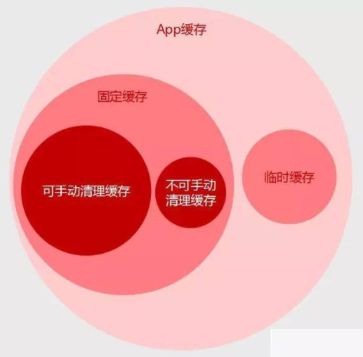

什么是缓存、加载和刷新？
小课堂【上海修真院】
分享人：李晗
目录
一.交互设计的见与不见
二.缓存
三.加载
四.刷新
五.参考文献
六.更多讨论
1.看的见的交互设计
交互设计有两大要素：信息和互动
信息：人们每天面接触大量多信息，从杂乱的信息中筛选出对用户有价值的，帮助用户作出选择，只有用户完成任务。
互动：有了信息之后，需要设计用户和信息的互动。信息的分类、布局都影响用户与信息的交互。用户对获取的信息作出反应，采取行动，应用需要给以足够的反馈来协助用户完成任务。
交互设计的形式
a、信息架构
信息分类，通过页面承载这些信息，并规划页面层次
b、界面设计
信息在页面的布局
c、流程设计
把一个任务设计的页面信息串联起来，形成一个线性流的关系
2.看不见的交互
有一部分交互设计，并不是能直观看到的，但他总在不经意间是用户使用得更加流畅。我们可以称之为“看不见的交互设计”，这也是初级设计师容易忽略的部分。
二.缓存（Cache）
1.什么是缓存？
APP中显示的数据除了从服务器获取，还有一个数据来源就是本地数据库（缓存），它给我们的设计增加了很多丰富性。缓存就是把已经加载过的数据保存起来，并在下次需要重复使用的时候，不需要再向服务器加载，直接获取本地数据。
1.为什么要用缓存？
场景一：【等待】，在向服务器请求新的数据时。我们让用户看到什么？
第一种是漂亮的等待加载页面；第二种是缓存的内容。
对于第二种，用户可以对页面进行操作，等待新数据时可以查看旧数据，更具有“可操作性”与“可用性”，从而减轻了从服务器获取数据这一动作的大小和时间长短，增强了用户体验。
另一方面，在没有缓存的情况下，用户多次刷新向服务器发起请求，增加服务器的负担和成本。
场景二：【结果】，没有联网，网络环境太差无法加载数据时，如果留给用户一个空白页面，感觉有点不负责任啊。
很多功能在没有联网的情况下也有使用的可能性，比如：APP中的通讯录，查看一些聊天记录，通知信息，文章列表等。因为用户打开APP不一定是要看新信息，说不定是回顾老信息，所以恰当的缓存可以满足更多的用户场景。
场景三：【金钱】，增加缓存是节省流量的一个方法。
加缓存应该注意的问题：
时间与容量限制，如果让缓存无限制的增加，手机将不堪重负，所以应该对缓存做些限制，比如多长时间后自动清除缓存，可缓存的最大容量是多少。
缓存的分类

1.临时缓存，常用于一个功能页面内，保存各栏目的缓存。同一个功能里会把子功能分为多个栏目进行划分，每个标签栏目下的内容在本次使用中都可保存为临时缓存，在该功能里切换栏目，不需要重新加载数据，使用缓存显示。
对于用户来说，使用时达到了无缝切换浏览，对于服务器来说，在短时间内数据很少会有更新，所以在一般情况下能满足用户的正常需求，并达到体验优秀。
临时缓存的清理机制是：退出该功能模块就清除之前的缓存。也就是说下次进入该功能模块，需要重新获取一次数据。
很多时候我们都会用到临时缓存，因为那些信息真的不是那么重要，而且不需要经常反复查看，那对于那些我们经常使用而且经常需要反复查看的信息，建议采取固定缓存，保存在本地，方便下次翻阅时不需要再一次向服务器请求数据了。
2. 对于固定缓存又会细分为可手动清理和不可手动清理的缓存。
手动清理缓存是最常见的缓存，几乎所有产品都采用这种缓存方式。平时用户浏览文章、图集加载的数据就以这种形式缓存在本地，下次看回这篇文章、图集时就不需要加载了。用户也可以手动把这些缓存清理了，释放空间。
不可手动清理缓存：对于某些特殊场景，例如一些相对固定的数据，如果一开始就打包进App里，这样会占太大容量，造成产品包很大，也不愿意每次进入页面都向服务器加载这些信息，那怎么办？建议的解决方法就是我们可以只加载一次就永远存在本地了，这样安装包也不会大，以后也不用加载了。
3、如何清理缓存？
一般App都会在“设置”里提供一个清理缓存的功能，一键把空间释放。除此之外，App最好要设计自动清理机制，可以通过两个维度来设计这个机制。
（1）、时间
通过设定一个固定的时间，或者根据用户使用周期灵活设定时间来清理缓存。每个产品的场景不一，用户使用频率不一，设定这个机制的时候就需要结合实际情况考虑了。
（2）、容量
一般是设定一个容量上限，采用堆栈的设计原理进行缓存清理，溢出堆栈的旧数据将自动清除。
三.加载（Loading）
加载如同反馈，在人机交互中，用户与界面的每一次互动都是一次加载过程。

移动端的特点之一是网络环境不稳定，差的网络环境意味着用户要等待更久的加载时间。在这种情况下，我们不得不考虑在这种间隙向用户展示什么内容才能让他们感觉不枯燥，安抚他们。
（1）加载动画：丰富等待间隙内容，分散用户等待焦虑注意力 加载动画的常见使用场景一共分为以下5种：启动页加载、页面局部加载、下拉刷新加载、页面上拉加载、切换新页面数据加载。
作用：动效多用于设备启动、连接到网络或者加载数据，是为了告知用户页面正在加载或刷新中，延长等待时间，避免让用户产生页面打开失败的错觉。
两面性：加载动效但不是万能的，不要过度设计，也不要过度使用。保证动效大小，繁重复杂的动效可能对APP的页面打开速度有影响，增加设备承载负担，对性能有很大考验。
（2）进度条：传递给用户时间感知
不确定的等待时间比已知的、有限的等待时间让人觉得更长。在一些情况下，并不适用动画加载，如加载H5，上传文件，人们会因无法预知加载时间长短而感到烦躁。你应该给你的用户一个清晰地等待时间,让用户盯着一个下载进度条会让跳出率降低。
（3）仿真内容和占位符:异步加载，提前进入视觉中心
不确定的等待时间比已知的、有限的等待时间让人觉得更长。在一些情况下，并不适用动画加载，如加载H5，上传文件，人们会因无法预知加载时间长短而感到烦躁。你应该给你的用户一个清晰地等待时间,让用户盯着一个下载进度条会让跳出率降低。
如果要加载图片，可以首先加载一个小型的缩略图片，然后转化成一个清晰的大图片。使用占位图和仿真内容并没有加快加载过程，但是在用户眼中加载速度好像变快了
当页面的框架固定时，只需要加载框架内数据时，采用这种刷新样式，即先加载框架，再加载框架内的数据。框架内的内容可以先用占位符或者预设图片来填充。
总结加载设计的原则：
1. 让加载变得更加有趣——忘记等待
2. 优化加载速度——减少等待时间。
3. 给用户及时退出加载通道——让权
1. 不要全全指望加载特效 ，如果加载时长太长，多么有意思的动画都压抑不住用户烦躁的心。
2. 在网速较快时（人们大部分时间网络环境都挺好的），那些动画一闪而过会让人觉得有点膈应，反而成了性能的累赘，因此很多APP又将加载动画回归到了简单菊花样式上去。
繁重复杂的动效会影响app效率，增加设备承载负担。最难的是把产品做简单，而不是做复杂。
几种加载机制
a、启动页加载
启动页，利用广告位、节日营销或加强品牌意识。可以点击，并且一般都可以选择跳过。可以为静态页，也可以是动态图。 还一个更重要的目的，启动app时的加载量很大（特别是首页内容丰富的产品），需要一个短暂的过程，广告幅的启动页过渡这个过程一举两得。
还一个更重要的目的，启动app时的加载量很大（特别是首页内容丰富的产品），需要一个短暂的过程，广告幅的启动页过渡这个过程一举两得。
另外，启动页还有一种做法就是，做出和首页一样，给人感觉进入首页特别快的错觉。这算是一种作弊的行为，好处明显，但是一旦被用户发现可能惹怒用户（用户真是玻璃心啊），使用时要根据实际情况权衡好利弊。
b、界面跳转加载
可分为两种方式，当前页加载和进入下页加载。
1.当前页加载：点击按钮后，在当前页提示正在加载并处理，成功后进入下一页。适用于需要判断及验证处理的页面中。例如表单信息判断和登录验证等。
2.下页加载：点击按钮，跳转至下一页面并加载内容。绝大部分app采用这种加载方式，极大的增强了流畅的感觉。
c、白屏加载
多出现在H5页面中，特点是一次性加载完所有数据，界面单一。若加载失败，页面为空。
d、分布加载/懒加载/预加载
1.分步加载：优先加载占网络资源较小的元素。如先文字和默认图标后图片，图片加载完成前使用占位符显示；当加载的页面内容有固定的框架时，可以先加载框架，再加载框架内的内容。此方式能够及时展示相应内容，减少用户心理等待时间。
2.懒加载：图片一直是网络资源占用大户，对于一个前端有几百张图片的网站来说，如果首屏即加载所有图片（无论这些图片有没有被用户看到），那无疑是既浪费网络资源，又伤害用户体验的事。目前，淘宝网、知乎等大流量网站都已经使用了图片滚动懒加载的方案——仅当图片滚入视窗，被用户看到的时候，才会去真正加载。
3.预加载：就是提前加载。如在启动页时预加载首页；通常应用在信息流中。比如搜索结果页，也就是我们经常看到的列表视图。当我们“将要滑到”页面底部时，页面自动请求数据，为你加载出下一页。所以一般你在浏览下图这种列表时，感觉非常流畅。因为页面进行了预加载。
f、智能加载
考虑网络流量问题，智能加载不仅需要考虑加载的速度，还需要考虑用户流量成本。因此通常应用于WIFI和4G网络切换条件下，另外还需产品判定网络是否通畅。
在4G条件下：下载行为自动终止，优先加载普通甚至停止加载图片或音乐视频；
在网络不通畅下：默认加载低质量甚至停止加载图片或音乐视频；
四.刷新（Refresh）
2012年，Twitter发明了这种 Pull to refresh 刷新方式，引发产品交互的一个小浪潮，大大小小的App争先效仿，甚至有开发者把它带到Chrome和Safari上面去了！ 慢慢地下拉刷新已经成为操作习惯，经典的下拉刷新会带着整个页面向下移动。用户体验做得越来越细后，在做下拉动作时，只是从屏幕上方拉下一个简单的刷新动画，更加轻便，降低页面变化的动作，增强用户体验。
京东下拉页面已不局限于“更新”了，而是赋予其新功能：主题活动。进入App后，京东的下拉页面出现的大促活动的游戏，这是下拉更新的基础上的创新，另外包括一些卡通形象卖萌增加品牌认知（好像偏题了）。
刷新机制
方案一：手势刷新
通过手指在屏幕上的左划右划上划下划达到刷新的目的，也包括一些浏览器产品的自定义手势，如横折折勾，进行刷新。最常见的是下拉刷新
方案二：点击刷新
通过点击一个按钮达到刷新数据的目的，如今使用较少。
方案三：自动刷新
根据设定好的规则，如时间、事件规则自动向服务器获取新数据并替换旧数据。使用自动刷新需要根据场景来考虑是否合适
场景一——对于频繁更新的内容、有时效性的内容，用户在一个设定的时间没有使用，则可考虑在下次使用时，自动刷新。比如微博、新闻这种具有时效性的产品
场景二——对于一个数据不会频繁变化的页面，可以考虑设定时间规则，在后台为用户默默更新数据并替换旧数据
拓展思考
刷新看似是一个比较简单，深入研究起来，还是蛮复杂的。需要考虑的点很多（产品中很多细节也是这样）：
1. 刷新的触发条件（现在移动端产品绝大部分的刷新方式都是下拉刷新与点击刷新按钮刷新。）
2. 刷新成功，刷新出新内容，提示文案是什么？
3. 刷新成功，没有新内容，提示文案是什么？
4. 刷新失败，有缓存的时候，提示文案
5. 刷新失败，无缓存的时候，提示文案是什么
6. 连续刷新时的保护：比如10秒内连续刷新10次，这个时候需要有一定的机制进行帅新保护，防止前端请求接口太过频繁，在给页面没有进行压测的情况下有可能会导致服务器宕机。
7. 刷新规则：比如新闻咨询类APP，是显示最新的10条新闻还是其他的逻辑。
四.参考文献
产品必看：三大要点助你缓解APP用户等待焦虑——三哥
关于加载设计，你要知道的8种策略和4种样式—— 刘东晨
交互设计的三大隐形机制:加载、刷新和缓存-马海祥博客
浅谈APP设计中的缓存、加载与刷新—— 耿瑞超
彻底弄懂HTTP缓存机制及原理——土木有水微博
五.更多讨论
鸣谢
感谢大家观看